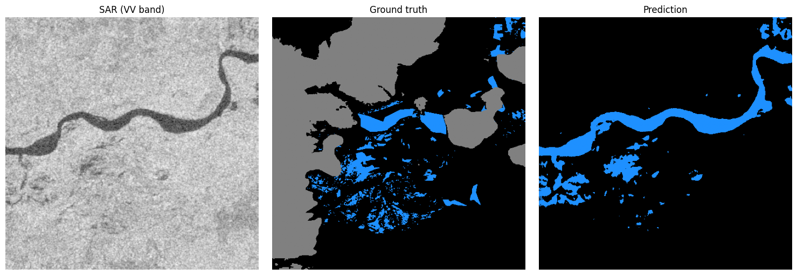
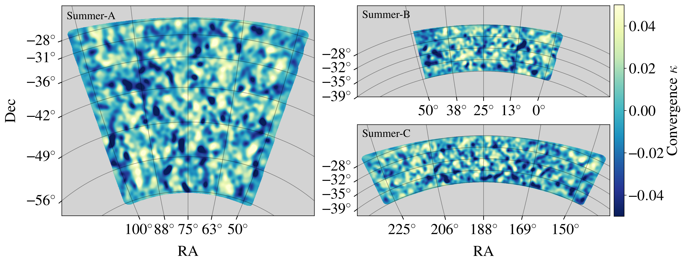
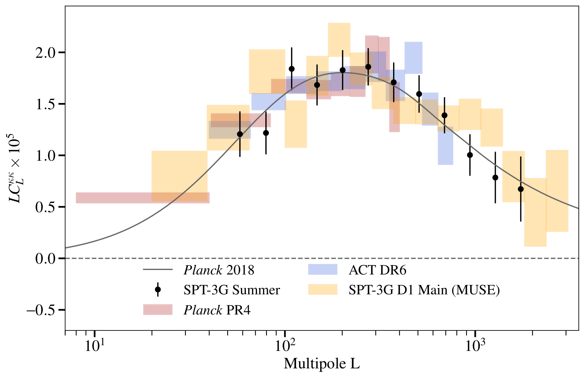

Data Scientist and PhD Astrophysicist specializing in statistical inference, machine learning, and scientific computing. Experienced in building end-to-end Python pipelines and HPC workflows, from raw data acquisition to statistical modeling and uncertainty quantification.
Hi, I'm Kevin! I grew up in Luxembourg, did a bachelor's and master's in physics and astrophysics at the University of Bonn, Germany. After my studies, I worked briefly as a BI developer back home before moving to Australia for a PhD in astrophysics at the University of Melbourne.
Outside of work, I like to work out, play guitar, and get lost in a good movie or TV series. I also love to travel whenever I get the chance, and I'm always up for trying something new.
Detecting flooding quickly matters for disaster response, but the moments floods happen are often exactly when optical satellites are least useful — heavy cloud cover during storms blocks the view entirely. Synthetic Aperture Radar solves this: it penetrates cloud cover and works day or night, at the cost of being hard to read directly, since water shows up as a subtle, dark, low-texture region within otherwise noisy backscatter rather than an obvious visual feature.
This project trains a U-Net with a ResNet34 encoder to segment water extent directly from raw Sentinel-1 imagery, trained on the Sen1Floods11 dataset, reaching a mean IoU of 0.79. It's trained on Vertex AI and deployed as a live, containerized API on Google Cloud Run.

The first reconstruction of the CMB lensing signal from the SPT-3G Summer survey using two years of temperature data, covering about 2,640 deg² split across three fields (1,210, 570, and 860 deg²). Combining all three gives a lensing amplitude of 1.015 ± 0.053 relative to the Planck 2018 prediction over multipoles 50 < L < 2000. These early results show the potential of the Summer fields for precision cosmology, especially when combined with SPT-3G's Main and Wide fields, which will push the total survey area to roughly 10,000 deg².


A method for measuring the CMB lensing signal of galaxy clusters that removes contamination from the thermal Sunyaev-Zel'dovich effect, which otherwise biases cluster mass estimates if left in.
Every large-scale structure measurement depends on knowing how far away the galaxies actually are, and photometric surveys only give a rough estimate of that. This project fits Gaussian mixture models to photometric redshift distributions using MCMC sampling, uses the Bayesian information criterion to decide how many components the data actually supports, and corrects iteratively for selection bias.